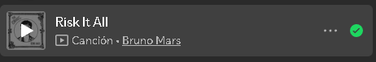
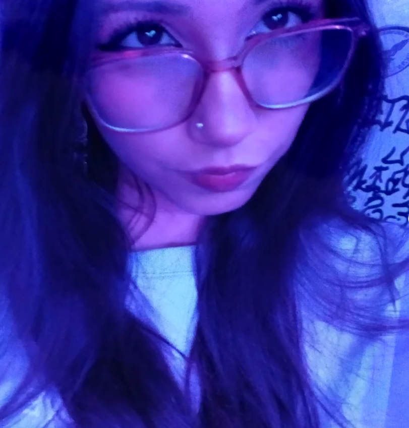
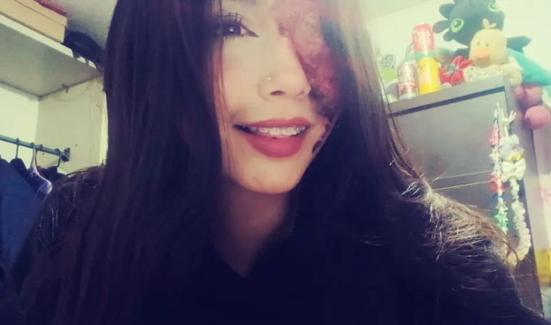

Tomo I
CAPÍTULO I
Título del Tomo
✦ · · · ✦

«Ese vinotinto que hace recordar el atardecer, la luna lista para brillar con su mayor poder y los libros donde guardé cada latido.»
"Sé que metí la pata y sé lo importante que era para ti... No hay excusa cuando fallé en responderte rápido. Pero hoy también veo a la mujer que ya casi se gradúa y que hoy llena Chía de dulzura con sus alfajores..."
Toca para abrir la carta completa →Has explorado 0 de 11 tomos guardados en este estante.
«Hechos con amor para endulzar tus momentos. Cada bocado, una razón para sonreír.»
Sofi, hoy 23 de octubre es tu gran día en la feria. Sé todo el empeño, las horas, la dedicación y el amor inmenso que le pones a cada alfajor. Eres una mujer talentosa, creativa y perseverante; verte emprender y brillar con este proyecto me llena de una admiración absoluta. ¡Hoy vas a romperla!
De tus propias palabras: cuando creías que nadie te conocía, me diste el mapa de todo lo hermoso que hay en ti.
Cada uno con su propia historia y cariño:
«...lo mucho que me gusta el color vinotinto, ese vinotinto que me hace recordar el atardecer y que al anochecer lo que espero con ansias poder ver, es la luna con su mayor poder... ¡¡BRILLAR!!»

«Pareciera que miraras con amor a todo»
Fascinación por maquillarse · Fuera de lo común«Yo le decía que era mi luna y que como ella ninguna...»
«...sé que el perdón lo merecen todos sin importar quién son, así soy yo, amable de corazón que sin importar tu error, el dolor suelo dejar pasar con un simple perdón.»
«Alta no soy pero mis expectativas arrasan lo llamado 'superior'... sé de dónde vengo y para dónde voy.»
Dijiste que al final del día te gusta buscar formas en las nubes sin parar. ¡Haz que pasen nubes y descubre lo que guardan!